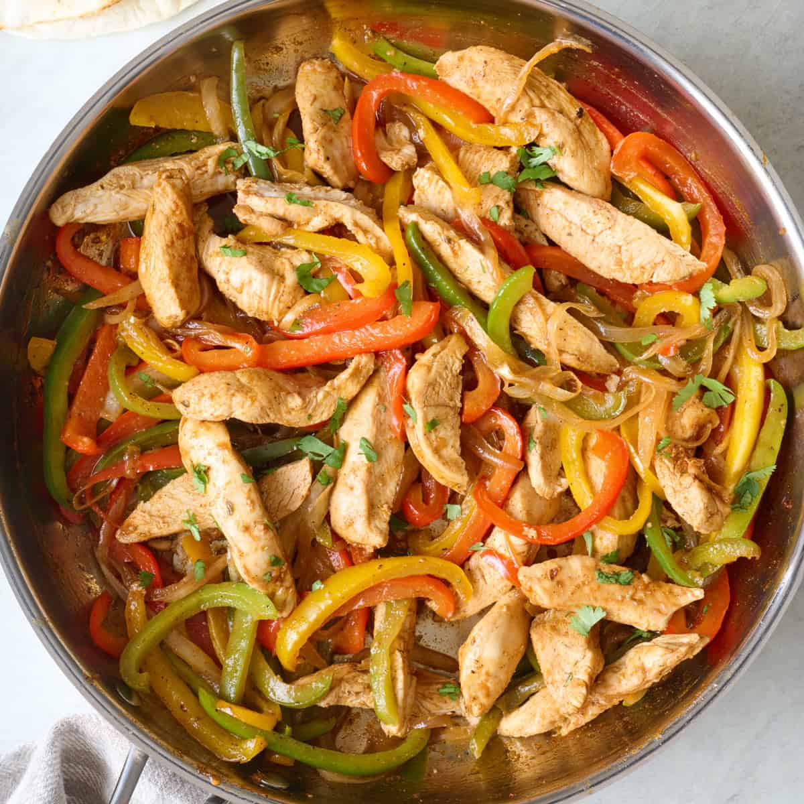

Chicken Fajita
Home

Description
The chicken fajita is a tex-mex dish that blends the sweet taste of chicken breast with a unique flavor of seasoning with a side of vegetables.
Ingredients
- 2 8oz Chicken Breast
- Olive Oil
- 1 Green Bell Pepper
- 1 Red Bell Pepper
- 1 Lime
- 1 Red Onion
- Salt
- Pepper
- Gound Cumin
- Chilli Powder
Steps
- Prepping the ingredients
- Gather all the ingredients required for making the dish.
- Wash the peppers and cut them into thin strips. Place on a plate.
- Peel red onion, cut the onion in half, then into strips. Place on the plate.
- Cut chicken strips into thin pieces. Place on a plate separate from the vegetables.
- Setting the seasoning
- Measure 1/2 tablespoon of chili powder and pour into a mixing bowl.
- Measure 1/2 tablespoon of ground cumin and pour into mixing bowl.
- Measure 1 teaspoon of garlic and pour into mixing bowl.
- Measure 1/2 teaspoon of salt and pour into mixing bowl.
- Measure 1/4 teaspoon of pepper and pour into mixing bowl.
- Mix the contents of the mixing bowl until mixed evenly or to desired mix.
-
Cooking the Dish
- Sprinkle the chicken breast with the season mix evenly.
- Place a pan on stove on a medium high heat and add 2 tablespoons of olive oil to pan.
- Once the pan is heated up, place the chicken breast onto the pan.
- Let the chicken breast cook on the pan for 4 to 5 minutes.
- Add sliced bell peppers and onions into the pan and let it cook with the chicken for 2 to 3 minutes.
- Squeeze lime juice into the pan as much as you can cover.
- After cooking, food can be served with a side of tortilla and any other sides of your choice.